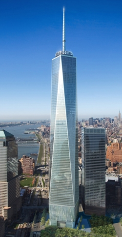

Video Sources
Freedom Tower
The promotional video for the new World Trade Center
Freedom Tower Rendering
A 3-D rendering of the new Freedom Tower and its surrounding environment
Websites
Renew NYC
The Renew NYC project was initiate after 9/11 to plan and coordinate the rebuilding and revitalization of Lower Manhattan
The Architectural Future of Ground Zero
After the initial shock of the attacks eventually wore off, New York was presented with yet another problem. What was to become of the former site of the Twin Towers? This constitutes an enormous urban planning project, as sixteen acres of the city has to be rebuilt and the hole in the skyline must be repaired. This problem has been approached from the point of view of real estate and of architecture (Lewis). The former was concerned with funding and land use. There was also a need to replace the lost office space.
The architectural considerations were more sensitive, as they dealt with revitalizing the city while at the same time remembering the events and the victims lost on September 11. It was obvious from the beginning that some sort memorial would have to be present on the site. For a while, it seemed that many architects weren't comfortable proposing concepts other than memorials for the site (Protetch ix). It was even proposed that exact duplicates of the Towers be built (Lewis). However, this would have meant the loss of great architectural and urban planning opportunities, and the proposals eventually began to include projects which incorporated commercial, residential and cultural life as well as memorials.
Currently, only use of the site has been the Tribute in Light, a temporary memorial of searchlights. The site is under the control of the Port Authority of New York and New Jersey and of Larry Silverstein, the developer of the site. In order to facilitate the process of planning and rebuilding Lower Manhattan, the Governor and Mayor created the Lower Manhattan Development Corporation to oversee the project. There are plans to build new skyscrapers, which would be accompanied by a memorial and possibly a museum. The site would also undergo infrastructure improvements (LMDC).
Construction for one of the skyscrapers, 1 World Trade Center, began in 2006 but progress is slow. The design of the tower is simple and symmetrical, with steel structural frame covered in clear glass and resting on a dense concrete. The concrete base was designed as a security feature, to guard the tower against bombings similar to that suffered by the old towers. Other security measures include a protective concrete core that will enclose escape staircases and fireproof elevators (Frangos). The tower itself will measure 1368 feet, and will be topped by a spire 408 feet high. The height and proportions of the new structure are very similar to the old towers, and will evoke their presence (Dunlap). However, there's still work to be done before this crystalline tower and the surrounding projects become a reality.